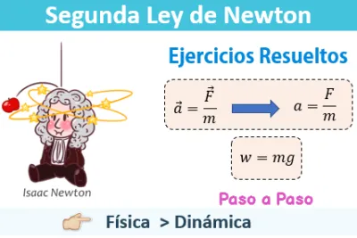

Leyes de Newton
Las leyes de newton ,también conocidas como leyes del movimiento de Newton,1 son tres principios a
partir de los cuales se explican una gran parte de los problemas planteados en mecánica clásica, en particular
aquellos relativos al movimiento de los cuerpos, que revolucionaron los conceptos básicos de la física y
el movimiento de los cuerpos en el universo.
En concreto, la relevancia de estas leyes radica en dos aspectos: por un lado constituyen, junto con la
transformación de Galileo, las bases de la mecánica clásica, y por otro, al combinar estas leyes con la ley
de la gravitación universal, se pueden deducir y explicar las leyes de Kepler sobre el movimiento planetario.
Así, las leyes de Newton permiten explicar, por ejemplo, tanto el movimiento de los astros como los movimientos
de los proyectiles artificiales creados por el ser humano y toda la mecánica de funcionamiento de las máquinas.
Su formulación matemática fue publicada por Isaac Newton en 1687 en su obra Philosophiæ naturalis principia
mathematica.
Video que te puede ayudar a entender mejor
Fórmulas

F=fuerza
m=masa
a=aceleración
g=gravedad
w=peso
w=F